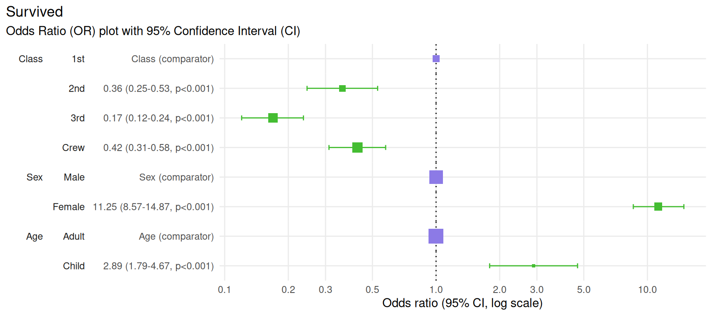
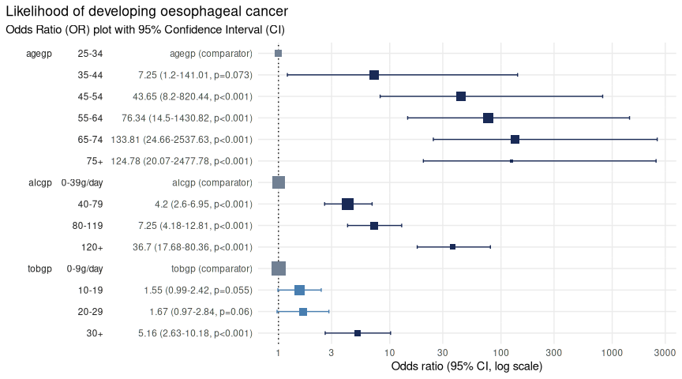

library(plotor)
library(dplyr)
library(datasets)
library(tidyr)
library(stats)
library(broom)
library(forcats)
library(ggplot2)plotor is designed to produce Odds-Ratio plots from a
given logistic regression model as produced using the general linear
model (glm) package.
Installing plotor
plotor can be installed via GitHub using the
devtools package:
# install.packages("devtools")
devtools::install_github("craig-parylo/plotor")You can also install the latest released version from Cran with:
install.packages("plotor")Example 1 - using the Titanic survivors data set
In this example we will explore the likelihood of surviving the Titanic disaster based on passenger economic status (class), sex, and age group.
Start with getting the data from the datasets
package.
df <- datasets::Titanic |>
as_tibble() |>
# convert counts to observations
filter(n > 0) |>
uncount(weights = n) |>
# convert categorical variables to factors.
# we specify an order for levels in Class and Survival, otherwise ordering
# in descending order of frequency
mutate(
Class = Class |>
fct(levels = c('1st', '2nd', '3rd', 'Crew')),
Sex = Sex |>
fct_infreq(),
Age = Age |>
fct_infreq(),
Survived = Survived |>
fct(levels = c('No', 'Yes'))
)
# preview the data
df |> glimpse()
#> Rows: 2,201
#> Columns: 4
#> $ Class <fct> 3rd, 3rd, 3rd, 3rd, 3rd, 3rd, 3rd, 3rd, 3rd, 3rd, 3rd, 3rd, 3…
#> $ Sex <fct> Male, Male, Male, Male, Male, Male, Male, Male, Male, Male, M…
#> $ Age <fct> Child, Child, Child, Child, Child, Child, Child, Child, Child…
#> $ Survived <fct> No, No, No, No, No, No, No, No, No, No, No, No, No, No, No, N…We now have a tibble of data containing four columns:
Survived- our outcome variable describing whether the passenger survivedYesor diedNo,Class- the passenger class, either1st,2nd,3rdorCrew,Sex- the gender of the passenger, eitherMaleorFemale,Age- whether the passenger was anAdultorChild.
We next conduct a logistic regression of survival (as a binary
factor: ‘yes’ and ‘no’) against the characteristics of passenger class,
sex and age group. For this we use the Generalised Linear Model function
(glm) from the stats package, specifying:
the family as ‘binomial’, and
the formula as survival being a function of
Class,SexandAge.
# conduct a logistic regression of survival against the other variables
lr <- glm(
data = df,
family = 'binomial',
formula = Survived ~ Class + Sex + Age
)
# preview the model as a tidy table
lr |>
tidy() |>
glimpse()
#> Rows: 6
#> Columns: 5
#> $ term <chr> "(Intercept)", "Class2nd", "Class3rd", "ClassCrew", "SexFema…
#> $ estimate <dbl> -0.3762229, -1.0180950, -1.7777622, -0.8576762, 2.4200603, 1…
#> $ std.error <dbl> 0.1361769, 0.1959969, 0.1715657, 0.1573387, 0.1404093, 0.244…
#> $ statistic <dbl> -2.762751, -5.194443, -10.361993, -5.451147, 17.235750, 4.35…
#> $ p.value <dbl> 5.731642e-03, 2.053331e-07, 3.691891e-25, 5.004592e-08, 1.43…Finally, we can plot the Odds Ratio of survival using the
plot_or function.
# using plot_or
plot_or(glm_model_results = lr)Change base font size
To increase the size of the font you can extend the returned plot
using the theme function from ggplot2. Here we
set the base size of all fonts in the plot to size 16.
plot_or(glm_model_results = lr) +
theme(text = element_text(size = 16))
Specify the breaks
Odds Ratio (OR) plots produced by plotor are displayed
using a log10 x axis.
By default ten breaks are shown, however, this can be altered by
extending the scale_x_log10 function from
ggplot2. Here we provide a manual list of breaks to
use:
plot_or(glm_model_results = lr) +
scale_x_log10(breaks = c(0.1, 0.5, 1, 5, 10))
Change the dot and whisker colours
There are three types of colours used for the dots and whiskers in the OR plot, depending on their category.
Significantrefers to dots where their results indicate a significant finding because their 95% confidence intervals do not touch or cross the value 1 - the line of no effect.Comparatorrefers to the level of a factor in the model against which the Odds Ratios are calculated.Not significantrefers to dots where their results do not indicate a significant finding because their confidence intervals touch or cross the line of no effect.
The colours for these points can be changed by extending the output
using scale_colour_manual function from
ggplot2 with a named vector specifying colour values for
the three types of colours:
plot_or(glm_model_results = lr) +
scale_colour_manual(values = c(
'Significant' = '#44bd32',
'Comparator' = '#8c7ae6',
'Not significant' = '#e84118')
)
Change the title, subtitle and add a caption
plotor uses the dependent variable as the title of the
plot by default with a subtitle indicating this it is an Odds Ratio plot
with a 95% confidence interval.
The plot can be customised with your own title, subtitle and add a
caption by extending the labs function of
ggplot2.
plot_or(glm_model_results = lr) +
labs(
title = 'Passenger survival from the Titanic disaster',
subtitle = 'Odds Ratio of survival by Class, Age and Gender',
caption = 'Data source: Dawson, Robert J. MacG. (1995), The ‘Unusual Episode’ Data Revisited. Journal of Statistics Education, 3. doi:10.1080/10691898.1995.11910499'
)
Example 2 - using the Smoking, Alcohol and Oesophageal Cancer data set
This data set comes from a case-control study of oesophageal cancer Ile-et-Vilaine, France. It contains three explanatory variables:
agegp- the age group of each participant,alcgp- the alcohol consumption of each participant, measured in grams per day,tobgp- the tobacco consumption of each participant, measured in grams per day.
To look at the likelihood of a participant to develop oesophageal cancer we can perform logistic regression against these variables.
df <- datasets::esoph |>
# convert aggregated data to tidy observational data
tidyr::pivot_longer(
cols = c(ncases, ncontrols),
names_to = 'Group',
values_to = 'people'
) |>
uncount(weights = people) |>
# prepare the variables
mutate(
# convert the intervention group to a factor
Group = Group |>
case_match('ncases' ~ 'Case', 'ncontrols' ~ 'Control') |>
fct(levels = c('Control', 'Case')),
# remove the ordering from these factors so the glm model doesn't treat
# them as numeric
agegp = agegp |> factor(ordered = F),
alcgp = alcgp |> factor(ordered = F),
tobgp = tobgp |> factor(ordered = F)
)
# preview the data
df |> glimpse()
#> Rows: 975
#> Columns: 4
#> $ agegp <fct> 25-34, 25-34, 25-34, 25-34, 25-34, 25-34, 25-34, 25-34, 25-34, 2…
#> $ alcgp <fct> 0-39g/day, 0-39g/day, 0-39g/day, 0-39g/day, 0-39g/day, 0-39g/day…
#> $ tobgp <fct> 0-9g/day, 0-9g/day, 0-9g/day, 0-9g/day, 0-9g/day, 0-9g/day, 0-9g…
#> $ Group <fct> Control, Control, Control, Control, Control, Control, Control, C…Next we carry out the logistic regression and then plot the results.
# conduct the logistic regression
lr <- glm(
data = df,
family = 'binomial',
formula = Group ~ agegp + alcgp + tobgp
)
# plot the odds ratio plot with customised title
plot_or(lr) +
labs(title = 'Likelihood of developing oesophageal cancer')
From this we can see there is a strong link between age and
likelihood of cancer. Compared with those in the 25-34
years group there is a statistically significant increased likelihood of
being in the case cohort of those in the 45-54 years group
(43 times more likely), 55-64 years group (76 times more
likely), 65-74 years group (133 times more likely), and
75+ years group (124 times more likely).
There is also a strong link between alcohol consumption and likelihood of cancer. Compared with those who consumed the least alcohol, defined as between 0 and 39 g/day, those who consumed more alcohol are more at risk of developing cancer with the greatest risk in those who consumed more than 119 g/day, putting them at 36 times more likely to develop cancer.
Tobacco use is a more nuanced picture. There was no detectable
difference in the likelihood of developing cancer for those in the first
three groups (0-9g/day, 10-19g/day and
20-29g/day) - seen by the confidence intervals crossing the
line of no effect. However, there was a statistically significant
increased risk of developing cancer in those who consumed the most
tobacco, 30+g/day, putting them at 5 times the risk.
Use variable labels
Replacing variable names with a more descriptive label makes the
plots more accessible to those not involved in the analysis. For
example, Alcohol consumption (g/day) is a more
user-friendly label than the name of the variable,
alcgp.
There are some amazing packages designed to help label your data. In
the below example we use the labelled
package to label our data before analysing and plotting it.
# library to apply labels to data
library(labelled)
# create a list of variable = labels
var_labels <- list(
agegp = 'Age group',
alcgp = 'Alcohol consumption',
tobgp = 'Tobacco consumption'
)
# label the variables in our data
labelled::var_label(df) <- var_labels
# preview the data with labels appplied
labelled::look_for(df)
#> pos variable label col_type missing values
#> 1 agegp Age group fct 0 25-34
#> 35-44
#> 45-54
#> 55-64
#> 65-74
#> 75+
#> 2 alcgp Alcohol consumption fct 0 0-39g/day
#> 40-79
#> 80-119
#> 120+
#> 3 tobgp Tobacco consumption fct 0 0-9g/day
#> 10-19
#> 20-29
#> 30+
#> 4 Group — fct 0 Control
#> CaseAnalyse the data using logistic regression as before and plot the result.
# conduct the logistic regression
lr <- glm(
data = df,
family = 'binomial',
formula = Group ~ agegp + alcgp + tobgp
)
# plot the odds ratio plot with customised title
plot_or(lr) +
labs(title = 'Likelihood of developing oesophageal cancer')plot_or recognises the use of labels and uses these in
preference to variable names wherever available.
Using variable labels makes plots easier to read and more accessible, and is especially useful where you want to include the chart in reports or publications.